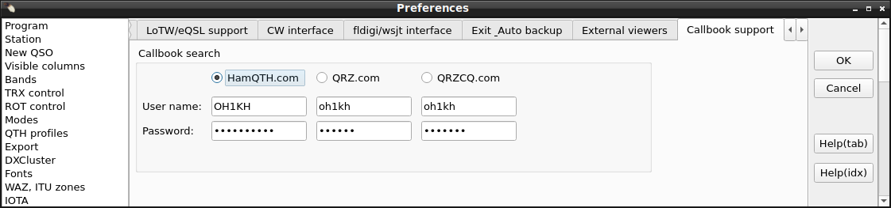

| WARNING! Backup your data often! BACKUP your log file at the end of ANY session! All what you need to backup and store in a safe place is the main log database cqrlog.fdb located in the /log_data folder. |
CQRLOG for LINUX by OK2CQR & OK1RR

Preferences
The first step you need is to set up your log preferences. From logging window, choose the 'File' menu item and 'Options' (or Ctrl-P].

A multitab window appears, allowing setup of following parameters:
Preferences
The first tab of the 'Preferences' card is labelled 'Program'. Here is the setup of main program behaviour.
Program

The
Internet connection is important to those who is behind a proxy. The data to fill does not need further explanation, hopefully. Check the box above if you don't need an internet connection - CQRLOG attempts to connect if you try to connect to the DX Cluster (either via web or telnet) and/or if you hit F6 to access the QRZ.COM callbook data.
Other settings are:
UTC offset - you need to set up your time difference to UTC. We needed this to enable CQRLOG to run properly with minimalistic desktop managers which may/may not set the time properly depending on your time zone and possibly the Daylight Save Time. KDE and Gnome providing this.
Grayline offset - you need to set up your time difference to UTC to provide correct display of gray line.
Sorting order of the QSO list - choose ascending to see first your first QSO but most common option is descending to see your latest records in your log book.
Show band map after program startup - if checked, you see the Band map at the program start.
 Show DX cluster window after program startup
Show DX cluster window after program startup - if checked, you see the DX cluster window at the program start.
 Show grayline after program startup
Show grayline after program startup - if checked, you see the grayline window at the program start.
 Show TRX control window after program startup
Show TRX control window after program startup - if checked, you see the radio control window at the program startup.
 Show propagation window after program startup
Show propagation window after program startup - if checked, a small window with propagation indices appears at the program startup.
 Check for newer version of DXCC tables after program startup
Check for newer version of DXCC tables after program startup - if checked, CQRLOG will check if any update of country files available. If new version is found, an update will be performed, however you are asked if you want this update.
Check for newer version of qsl managers database after program startup - if checked, CQRLOG will check if any update of QSL Managers database is available. If new version is found, an update will be performed, however you are asked if you want this update.
 Show deleted countries in statistics
Show deleted countries in statistics - adds formerly valid countries to statistics and overall DXCC counts.
Show sunrise/sunset in UTC - if checked, sunrise and sunset times are shown in UTC, otherwise in local time. Set up the proper time difference for both grayline and sun rise/set.
Show all QSOs - Show QSO since - affects the QSO list window (Ctrl-O). 'Show all QSOs' means that all records in the log are displayed. It may speed up the operation if you are using a huge log (> 70 000 QSO). Actually, it limits the number of processed records to contacts since a year (the box contains a year in 4 digit form), entered into the box right from
Show QSO since. sets the limit of number of records displayed but the rendering of QSO list is much faster. Remember, that the option
'Show QSO since' affects also the export!
Show statistics in metres (m) or Megahertz (MHz). Checking of one of the radio buttons affects the statistics appearing at the bottom of logging screen:

and also headers of the main statistics (DXCC, WAZ and ITU).
The bottom line with two options - 'Show all QSOs' and 'Show QSO since' affects the QSO list window . but the rendering is rather slow, the other option - if you want to export records earlier than the year set in the fill box, choose 'Show all QSOs'!
Station

Enter your call, name, QTH and WW Locator here. Remember, that the entered call is used also as login for the DX Cluster and is displayed in all stats exported to html. The WW locator is of high importance because it determines your accurate position (ie. you don't need to enter your exact coordinates). The WW Locator is used in beam and distance computation as well as the start point of the simplified path to the other station which appears in the grayline map.
New QSO

Here are the default values for the new QSO. Remember, if the radio control is active, the default frequency does not appear on the logging screen. The preset RST values will apppear in their corresponding boxes.
The Change default values button allows you to change frequencies available in drop down menu in NewQSO window. Very usefull, if you have your favourite frequencies and don't have radio connected to computer.
The 'Use spacebar to move between fields' is very interesting and probably the most natural way but it works only if you are moving forwards. To move between fields, there are two other generic possibilities (TAB key and up/down arrow keys) which would remain unaffected even if you check the spacebar option. The 'Refresh data after save QSO' affects the data displayed in the QSO List (Ctrl-O). If checked, each QSO appears in this list immediately after logging, however the refresh procedure is quite slow. To save time, keep this box unchecked. The 'Skip over mode and frequency when radio is connected' is very important if the radio control is active. The 'Show detail window' option enables an extra window to appear at program start. The 'Enable auto search on HamQTH.com/QRZ.COM' switches on the automated search for HamQTH/QRZ callbook data for any worked station. This option does the same as F6 in logging screen, however it can be rather slow depending on the HamQTH.com/QRZ.COM server availability. The 'Show recent QSO records for last ** days' limits the record number listed in the logging screen. Do not set the number of days too high, a high number can cause the log speed issues! The default value of 5 days is appropriate for most cases. The In previous QSO list show also QSO with call/p etc. means you can see previous QSO with station even if he was active from another country with his call/prefix. E.g. if you enter OK2CQR, you'll see also previous QSO with him when he was OM/OK2CQR, SP/OK2CQR etc.

This window dispays details about new/confirmed zones, IOTA details etc.
Visible columns

Checked columns are visible in the previous QSO list appearing at the top of the logging screen.
Bands

Checked bands are visible in both statistics appearing at the bottom of logging screen (bands/modes of the actual logged station) and main DXCC, WAZ and ITU zones statistics. It affects also the Challenge points at the bottom of the DXCC statistics.
TRX Control

The TRX Control displays actual frequency. You can change band and mode. Radio will change the freq/mode after you double click to a spot from dx cluster or on an item in bandmap.
CQRLOG users rigctld utilty from HamLib. It controls the radion and programs can communicate with it throught UDP and control the radio. CQRLOG supports operating with two TRX but always only one is active.
Radio one, desc: is a description you'll see in TRX control window. It's only description text, you can write there whatever you want.
Host: computer where is rigctld running, I suppose localhost is just fine for most cases.
RIG ID model: indicates the radio type ID which correspond to the IDs used by hamlib. The full list is
here.
Device device where the radio is connected to. /dev/ttyS0 is COM1, /dev/ttyS1 is COM2 etc. If you use USB to serial interface, the device usually will be /dev/ttyUSB0 for COM1 etc. If you are using Ubuntu, you have to be member of dialout users group to have rights to the serial ports.
Poll rate: means how often CQRLOG should read data from the rigctld. 500 miliseconds is fine.
Port number is number of port used to communicate with rigctld. Default value is 4532. The second radio, has to have different port e.g. 4533.
Extra command line arguments usefull when you have to specify more parameters to rigctld. E.g. CIV address (--civaddr=ID, where ID is the CIV address).
Serial port parameters from manual of your rig, please choose right options. Very often is much better to specify only serial speed and other options left as Default. Default value means settings from HamLib will be used.
The default frequencies where the radio tunes if you click onto a band button in the 'TRX control' panel can be changed to your preferences. The mode is switched in accordance to the band plan, there is actually a separate set of default frequencies for each CW, SSB, RTTY, AM and FM modes. Click onto 'Change default frequencies' button and set up frequencies of your choice.

Modes

Here you can set up the default bandwidth for any of supported modes (CW - SSB - RTTY - AM - FM). If your radio is tuned to the corresponding band segment or if you switch the mode on the radio control panel, CQRLOG will change the bandwidth to the desired value. The bandwidth can be changed at any time, however a program restart will be probably needed to take the changes into effect.
User definable digital modes can be set up in a separate box. Use comma as a separator, ie. BPSK31,QPSK64,OLIVIA,CONTESTIA etc.
Some TRX like ICOM doesn't have support for this in HamLib. To get mode settings work, set all values to 0 (zero).
QTH Profiles

CQRLOG uses QTH Profiles. Your QTH and equipment details can be entered here. If you are logging a new QSO, choose the appropriate profile. Later, you can watch which rig and antenna was used but the main purpose is usage in filters. You can create a filter with QTH Profile as one of the criteria, a later filtering of QSOs made on your portable operation or QRP activity is possible. This method seems more effective as an usual portable log, even if you are using MM0XXX/P as your call it will probably contain a mixture of all portable activities together. With QTH Profile, there is always possible to make a separate 'log' for each operation.
Export

 | Our tip: Check all fields if you backup your whole log. Nothing will be lost and the data amount is not so high, compared to very reduced export. |
This option allows an easy setup of the log fields to be exported into ADIF or HTML format. Exported are, of course, only checked fields. The 'Width' option denotes the column size in the HTML export.
DX cluster

This card allows an easy setup of the DX cluster spot filtering. Check the bands you want to display. If you want to supress (ie. filter out) spots of some DX countries, put its prefixes to the box below. Use a semicolon as a separator.
Fonts

This card is self explaining, hopefully it does not need any comments. Choose the appropriate font size to prevent any screen garbage and a nice look of the buttons.
WAZ, ITU zones

This is the color coding setup for the 'Details' window. New ones can be displayed in different color and QSL status is indicated verbosely in the 'Details' window. The 'Show info' boxes must be checked to display the relevant info.
IOTA

New IOTA color coding and QSL status can be set up here. The 'Show info' boxes must be checked to display the relevant info.
Membership

The primary aim of the 'Membership' info is tracking of members of a club or stations valid for an award. The info is derived from the call sign entered into 'Call' box in the logging screen. CQRLOG can track member's calls from up to 5 databases simultaneously. To set up the tracking, do following steps:
1. Choose a Club to be tracked. Click the first long button in the 'First club' box. A long list of Clubs appears.

2. Click the 'Load' button. The membership data are loaded from the text database in the 'members' subfolder of your CQRLOG directory. A box with the number of converted records appears.

 | Note: All files in the 'membership' subfolder are displayed. If you create your own database, put it into this subfolder!
|
3. Click the 'Settings' button. A new dialog appears:

The color coding scheme for new members, new band, new mode, need of a QSL card and an already confirmed contact can be set up in the left half of the window. You can see here also my preferred color settings.
This dialog allows also to set up the messages appearing in the 'Details' window if you work a member of a club which is tracked. There can be anything, my preferred messages are:
New %s member! (%c #%n)
New band %s member! (%c #%n)
New mode %s member! (%c #%n)
QSL needed for %s member! (%c #%n)
Already confirmed %s member! (%c #%n)
Note also the regular expressions used in the messages. The complete list is here:
%l - long club name
%s - short club name
%n - club number
%c - callsign
The right half of this screen contains the join rules.
Here you can set up what from the QSO entry should be bound with the appropriate column in the membership database. Because most relevant is the call sign in the QSO and the membership database contains also mostly the call sign, use the defaults - the 'clubcall' in the 'join ... field in club database' and the 'call' in the 'with ... field in main database'.
The lower part contains a dialog allowing to set up where the resulting info will be stored.

While logging, you will see the info in the corresponding field. The most preferred field is 'Award'. Since this field is used for check purposes only, all info (more meberships) are displayed in a single line which can be longer than the corresponding field on the logging screen. You can navigate here with the cursor but the well formated and color coded results in verbose form are displayed in the 'Details' window.

Bandmap

The Band map is a well known feature of many contesting programs, however it is great also in a general logging program. It contains a mix of filtered DX Cluster spots and your own entries where you can store call and frequency of a station which you can't work just now but you want to return to it later.
A very useful option of the Band Map is the 'entries aging'. Depending on the time left since entry 'birth', the color changes to lighter tone until the entry disappears. There are two levels between appearance and disappearance of the entry. The times of these two levels and the time of disappearance can be set up. If you change the aging times, restart CQRLOG. Remember that a program restart will be needed to take the changes into effect!
The spots can be color coded to highlight new countries, new band countries etc., in the same way as in the DX Cluster window - check the 'Use the same color as the spot' option. If this option remains unchecked, all entries are shown in black color (with aging to dark grey and light grey) and your own entries, made with Ctrl-A or the Big Plus key on the numerical keyboard, are shown in blue. Also, another set of Watched and Ignored entries can be defined.
The content of the Band map can be stored if leaving the log. Check the 'Save band map after close' option.
The 'Show only active mode' and 'Show only active band' options providing an additional level of cluster spot filtering. When checked, the Band Map will show only spots for the mode or band where the radio is on. The spot are sorted by frequency, so you will see what is on the band - at a glance. No doubt you will prefer this over the DX Cluster window which contains a garbage of rolling spots, often hard to 'catch out'. Finally, if the 'Delete station from band map after QSO' option is checked, the entry with a worked station disappers from the Band Map. If such station is spotted again, it appears again in the Band Map.
xplanet support

To ensure correct rendering of the azimuthal map with DX Cluster spots, the external program xplanet must be installed and several parameters must be set up. First, install xplanet (version 1.2 if possible). Many distributions have this program either on the installation media (CD, DVD) or xplanet exists in the form of a corresponding package (rpm, deb, tgz, ebuild etc.). If not, download source codes from:
http://xplanet.sourceforge.net/download.php
Follow the usual installation instructions:
./configure
make
make install
There are no known dependencies issues.
First thing to be set up is the path to the xplanet binary. The default
/usr/local/bin/xplanet
is OK in most cases for installation from sources, the usual path for installation from precompiled packages is
/usr/bin/xplanet
Adjust the
window size (remember to set up a square, ie. 400x400, 300x300 etc. to avoid strange efects). Also, the
window position must be set up to create nice looking screen. Use the
Test it! button to see how your settings affected the resulting screen.
Xplanet can refresh its display in a preset interval. This is very useful because it can read the spot (entry) list and update the displayed data. To avoid 'flooded', unreadable window, the number of displayed spots/entries must be limited. It seems that 20 is the maximum to keep the display garbage away. Actually, the number of spots (entries) is not limited by the program but by the readability. If you change the number of spots to be displayed or if the spots should (should not) go to xplanet, restart the program. Remember that a program restart will be needed to take the changes into effect!
Set up the source (DX Cluster, Band map) by checking the appropriate radio button in the '
Show stations from' section. The '
Projection' has 3 options:
- 3D - shows the globe as viewed from the space. This rendering type without any projection is very nice, however the very distant points will be not visible, also spots or band map entries of distant DX locations will disappear. Angles should be true because the globe is 'centered' to your domestic location. Distance are not true because of lack of projection. This eye candy is therefore good for those who does not work DX stations.
- Azimuthal - is the usual directional map which you find useful for any rotator indication. Both angles and distances are true, however the continents patterns may look a bit strange to those who is not very accustomed with this projection. The azimuthal projection is the best for a DXer.
- Azimuthal without background - is the same as above but the background which contains the angle (polar) scale is not rendered. It is an 'emergency' solution which is useful if you have not space enough to set up the main xplanet window as a square.
The xplanet window has currently no other function than to display spots or band map entries in the azimuthal projection or 3D-like picture.
Zip code tracking

Zip code tracking allows to determine states, counties, provinces and other geographical details if the postal zip code structure allows such operations. The zip code itself is retrieved from the callbook address. The database is located in the /zipcodes folder. If set up properly, the F6 key is used to determine US state, US county and italian province.
Setup: The database must be loaded before use and the target (field) must be specified. Also, the position of the zip code (line begin or end) must be set up.
LoTW/eQSL support

Provide your user name for eQSL/LoTW and the password (this is
not the password sent to US amateurs via postcard!). Choose if you want to include LoTW confirmation in the statistics and
New country and
New band country info messages.
CW interface

Choose your preferred CW interface. There are 3 options: None, WinKeyer USB and cwdaemon. We strongly recommend the Winkey USB by Steve Elliot, K1EL, which provides 'all in one', including one of most advanced paddle keyers available. The cwdaemon should be seen as provisional option with many limitations, which may need a custom made linux kernel to avoid sloppy CW at speeds above 25 WPM. If cwdaemon used, only keyoard keying is possible.
Detailed setup of both CW devices is here:
The further steps (CW messages edit, keyboard keyer operation) - click
here.
fldigi interface
First,
fldigi must be installed and functional.
Preferences must be set up to operate with fldigi. Set up the path to fldigi of you want to start it when CQRLOG switches to remote mode. Other parameters including the way how should the CQRLOG - fldigi combo handle the frequency, mode and RST. CQRLOG also loads the fldigi contents to keep the data, so the 'polling' period should be set up. The 2 seconds interval is very acceptable default.

The way how the CQRLOG - fldigi combo handles the frequency, mode and RST is rather important. Keep in your mind that CQRLOG operates in remote mode which means that the logger is offline and therefore does not display the actual frequency and mode on the logging screen. If you set up properly the
fldigi mode and frequency control, both are correctly displayed in the
fldigi window.
Choose the fldigi option in
Frequency from,
Mode from and
RST from boxes and you don't need to watch the logger, except the QSO list in the upper portion of the logging screen. When logging/saving a contact, frequency, mode and RST should appear correctly in this QSO list. If you choose the CQRLOG option, you must set the mode in CQRLOG which seems less comfortable.
Auto backup
To increase the safety of your log data, CQRLOG is equipped with
Auto backup option which allows to export (ADIF) and store the log data in another safe location. The ADIF format was choosen because of its text format. The output file can be compressed in tar.gz format.

Of course, the export and compression takes some time, depending on the log size (QSO count). If you are not in a hurry, allow the program 2-3 minutes to perform this safety measure. We reccomend to backup your log to your hard drive from here it should be copied to another media (your server, USB flash, a memory card etc.).
External viewers
Set up the viewers used for browsing the notes related to a particular callsign.

The notes in the call_data subfolder can contain text, html, pdf and image files. To enable reading of all file types, corresponding viewers must be set up properly, ie. must be in the system path.
Callbook support
CQRLOG supports
HamQTH and
QRZ.com callbooks but only access throught XML interace is supported. HamQTH has free interface, for QRZ.com you have to pay a year fee.

RBN support
CQRLOG can receive spots from RBN and show it on Gray line map. It's very nice to see where your signal has been decoded especially when you are calling CQ on empty band.
 Login:
Login: - your user name to log in to RBN. It's usually your own callsign.
Watch for: the callsign you are watching for, also usually your own callsign. If you leave this field empty, every spot will be shown on he grayline map.
Auto connect after open the log - check this option if you want to be autoconnect to RBN when program stats, you don't have to care about it and CQRLOG will do it for you automatically.
Signal strench How strong you are will be clear very quickly when you look at the map with the dots in different color. Which color will be used can be changed here.
Delete old information after XX seconds The dots won't stay on the map forever. 180 seconds (3 minutes) is good default value. Please note, it also depends on the band, if you change the band, dots will always be deleted. All data is band related.
Online log upload support
CQRLOG supports online log upload to
HamQTH,
ClubLog.org and
HRDLOG.net

Both ClubLog and HamQTH need user and password, Clublog also email used when registered. HRDLog.net needs only user name and code, you've got by e-mail. You can set different color for every service. This color will be used for status messages which will inform you about upload progress.
Upload QSO data immediately after save, update or delete means that every insert/update or delete will be uploaded automatically. But if you change something in QSO list window with hot keys e.g. CTRL+S, CTRL+W etc. and/or download data from eQSL/LoTW, changes won't be uploaded. All will be uploaded after you save/delete QSO or if you choose Online log and Upload to all online logs menu.
How to get it work?
- check if you have set correct username, password (email, Code)
- export all data from the log to ADIF file
- import this adif file to the website of online log you are going to use (if you are using HamQTH, please wait till email about success import arrives)
- open QSO list window, click to Online log menu and choose Mark QSO as uploaded to all logs, CQRLOG marks all QSO as uploaded
That's all, Now if you insert/edit or delete QSO, it will be also uploaded to online log.